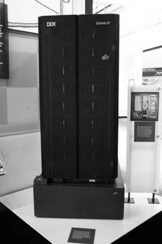
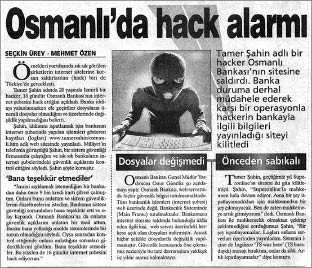
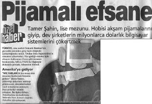
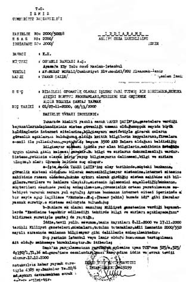
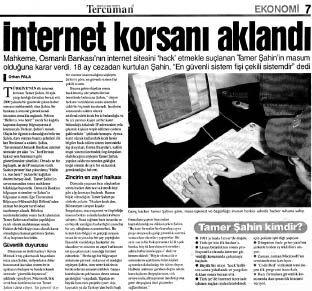

Burnumu her deliğe sokmaktan vazgeçecek gibi durmuyordum. İnternet benim dünyam olduğu için burada benim kurallarım geçerli olmalıydı.
O yıllarda internet bankacılığı daha yeni başlamıştı. Bu akımda öncü ise Türkiye Cumhuriyeti’nin Osmanlı’dan beri süregelen, padişahların bile hesabının bulunduğu ilk bankası olma ünvanını taşıyan Osmanlı Bankası’ydı.
Osmanlı Bankası, 1856’da kurulan İngiliz sermayeli Bank-ı Osmani (Ottoman Bank) ile Rothschild Ailesi’nin eşit ortaklığıyla, 1863’te İstanbul’da Bank-ı Osmani-i Şahane adıyla kurulmuş. Bank-ı Osmani-i Şahane, uzun yıllar Osmanlı İmparatorluğu’nun resmi bankası ve hazinedarı olarak görev yapmış. İmparatorluk genelinde birçok altyapı yatırımını destekleyen banka, yaygın şube ağı sayesinde piyasayla ilişkilerini artırarak ticari bankacılıkta kendisine önemli bir yer edinmiş.
Osmanlı Bankası’nın çağa ayak uydurmak amacıyla başlattığı internet bankacılığı reklamları hep internet sitesinin ne kadar güvenilir ve kırılamaz olduğundan bahsediyordu. Hatta bir reklamında feribotta giden Osmanlı Bankası mühendisleri otomobillerinin içinde otururken kapılarını kitleyip parlak bir fikir buluyorlardı: Ziyaretçilere kendi fotoğraflarını gösterme fikri. İnternet bankacılığına giriş yapan kullanıcı, fotoğrafını görecek, böylece doğru siteye girdiğini anlayacaktı. Böyle yüzeysel atışlar yaptıkça dikkatimi daha çok çekiyorlardı.
İnternet bankacılığı uygulamasını incelemek istiyordum. Bir Osmanlı Bankası şubesine giderek hesap açtırdım. Her normal banka müşterisi gibi şifremi alarak internet bankacılığına giriş yapmıştım. Kısa süreli bir incelemeden sonra gözüme çarpan değişik şeyler oldu. Bulduğum ufak tefek güvenlik açıklarını bankaya e-posta atarak bildirdim. Güvenlik açıklarını tespit etmek için suç işleyecek derecede sistemlere müdahale etmek gerekmiyordu. Dikkatli bir göz, çok az incelemeyle hataları fark edilebilirdi. Bankadan kısa sürede gelen cevap tam da beklediğim gibi fazlasıyla ego kokan, kişisel anlamda varlık gösteremeyerek sırtını bankaya yaslayan biri tarafından yazılmış gibiydi. “Kurumsal olarak her türlü güvenlik önlemimiz tamdır. Bahsettiğiniz güvenlik açıklarına sistemlerimizde rastlanamamıştır” tarzında, içerisine biraz da küçümseyici cümleler serpiştirilmiş bir yaklaşımdı sergiledikleri. Buna karşın bahsettiğim güvenlik açıklarını hızla kapatmaktan da geri kalmamışlardı.
Bu durum beni çok sinirlendirmişti. Hem benim gönderdiğim açıklarla ilgili bilgilerden faydalanmışlar, hem de hiçbir şey olmamış gibi bir hacker’ı küçümsemişlerdi. İçimde onlara karşı aşırı bir kızgınlık olsa da bekleyen 1 yıl 8 aylık hapis cezasını düşünerek kendimi bir şey yapmamak için telkin etmeye çalışıyordum. Sonuçta bu banka kurumsal olmanın anlamını kavrayamamış onlarca büyük firmadan biriydi. Buram buram kurumsal kibir kokan anlayıştan, farklı bir yaklaşım beklemek yanlış olurdu.
Ben bu düşünceler içerisindeyken elbette internet uyumuyordu. Gece yarısı insanlar birbirlerine hararetle bir internet adresi göndermeye başladı. http://www.osmanli.com.tr/ts.html adresinde yer alan “Hello T. Ş. was here” mesajını içeren bir adresti bu. Belki de televizyon reklamlarında oynanan çok güvenli internet bankacılığı tiyatrosunun son perdesiydi denilebilir. O yenilmez, yıkılmaz gibi gözüken kapitalizmin kalelerinden birinde, surlarında açılmış büyükçe bir delikti bu. Öyle ki, ağzında gümüş kaşıkla doğmuş, dünyanın ve Türkiye’nin en zengin ailelerinin kibirini yansıtan bir kale. Bankanın sistemlerinin ne kadar güvensiz olduğunu kanıtlamak istercesine link, bir insandan diğerine hızla yayılıyordu. Konuşulanlara bakılırsa, bu uzun insan zinciri sonucu adres beklenenden çok sayıda insanın eline geçmişti.
T. Ş. imzasından dolayı gözler ister istemez benim üzerimdeydi. Arkadaşımın tanıdığı aracılığıyla bankanın içerisinden haberler geliyordu. İçerideki bilgi işlemden sorumlu kişi sisteme koyulan ts.html dosyasını silerek üstlerine aslında hack edilmediklerini iddia ediyordu. Bu iddia üzerine hem ts.html dosyası gizemli şekilde tekrar sunucu hack edilerek yerine koyuluyor, hem de bir internet sitesinde binlerce banka müşterisinin fotoğrafları yayınlanıyordu. Süreç tamamıyla internet üzerinden işlediği için benim gibi binlerce insan da bu yaşananlara anında şahit oluyordu.

Satranç ustası Kasparov ile maç yaparak ünlenen, Osmanlı Bankası’nın kullandığı IBM Deep Blue bilgisayar.
Onların eşsiz bir güvenlik sistemi gibi öne sürdükleri, ziyaretçiye fotoğrafını gösterme fikri, bir internet sitesinde duran binlerce müşteri fotoğrafı olarak yayınlanıyordu. Banka müşterilerinin çeşit çeşit vesikalık fotoğraflarını insanlar birbirlerine gönderip eğleniyordu.
Osmanlı Bankası internet sitesi dünyanın en ünlü satranç ustası Kasparov ile maç yapan IBM Deep Blue marka sunucuda tutuluyordu. Yarım milyon dolar değerindeki bu sunucu sistemi, bankanın teknolojiye ne denli çok para harcayıp, insana yatırım yapmakta ne kadar cimri olduğunun göstergesi gibiydi. Bilgi güvenliği yolculuğunda teknik önlemler bir şekilde alınabilir ama insan hep en zayıf halka olarak süreçler arasındaki yerini alıyordu.
Banka artık bu olanlara direnemeyip, sistemleri üzerinde ayrıntılı bir inceleme yapmak üzere sunucularını kapatmak zorunda kaldı. Sistemlerine bir süreliğine ulaşılamıyordu. Artık bir nevi hack edildiklerini kabul etmiş durumdaydılar.
İnternet bu konudaki söylentilerle, iddialarla çalkalanırken Osmanlı Bankası internet sitesine atılan T. Ş. imzasından dolayı gazeteler röportaj için bana e-posta göndermeye başlamıştı.

Milliyet gazetesi ekonomi sayfası (2001).
Gelen röportaj teklifleri içerisinden o zaman Türkiye’de en yüksek tiraja sahip olan Milliyet gazetesini seçmeye karar vermiştim.
Telefonda yaptığımız kısa röportaj sonrası ertesi gün gazeteye baktığımda önünde klavye bulunan kar maskeli bir adam fotoğrafının üstünde “Osmanlı’da Hack Alarmı” başlığı bulunuyordu. Haberde İzmirli Hacker Tamer Şahin’in bankanın sistemlerini hack ettiği, bunun üzerine bankanın bilgisayar sistemlerini kapattığı yazıyordu. Ayrıca bankanın “Tüm verilerimiz mainframe adı verilen ana sunucuda tutulmaktadır. Saldırı sadece internet sitemize yapıldı” şeklindeki halkı bilgilendirme amaçlı açıklamasına da yer verilmişti.
Bu açıklama beni çok güldürdü. Bir hacker için arkadaki ana sunucuya erişmek bazen sadece keyfi bir egzersiz olabilir. İnternet sitesi, arkadaki ana sunucuyla iletişim halinde olduğu için sitedeki yazılımla oynayarak rahatlıkla ana sunucudaki bilgilere erişmek mümkündür. Banka, bilgi edinme hakkı olan müşterilerini, ortaklarını yanıltarak kamuoyunu yanlış bilgilendiriyordu.
Gazeteci haberin çıktığı gün beni tekrar arayarak haberin çok ses getirdiğini, daha kapsamlı görüşmek için İzmir’e gelmek istediğini söyledi. Henüz medyanın nasıl bir güç olduğundan, ne şekilde konuşmam gerektiğinden habersiz “En fazla ne olabilir ki?” diye düşünerek teklifini kabul ettim. Genç muhabir İzmir’e geldiğinde benden de heyecanlıydı. Belli ki bu haberi gazetede kendi için sivrilme şansı olarak da görüyordu. Röportaj saatlerce sürdü. Gazeteciyle bugün düşününce komik gelen bir şart konusunda uzlaşmıştık. Yüzümün gösterilmesini istemiyordum. Bilgisayar başında, yolda yürürken arkadan bol bol fotoğrafım çekildi. Kendisini yüzümden mahrum etmiştim belki ama geveze, temkinsiz konuşma tarzımdan hiçbir şey esirgememiştim. Ben gevezeliği sevdiğimden memnun, o büyük balığı yakaladığından memnun halde bitirdik röportajı.
Ofisteki arkadaşlarım çok fazla şey anlattığımı, başımın derde girebileceğini söylüyordu. Dedikleri gibi dikkatsizce konuşarak gazetecinin eline bayağı malzeme vermiştim. Muhtemelen vermediğim malzemeyi de onun kendi hayal gücü sağlayacaktı, işi buydu sonuçta. Ben yine de sürekli söylediklerimi gözden geçirip iyimser halimi korumaya olabildiğince gayret ediyordum.
Pazartesi olduğunda haberimin yayımlanacağını tamamen unutmuştum. Ama başkaları unutmamış olacak ki telefonum sabah erkenden çalmaya başladı. Cevapladığımda telefondaki ses “Abi yuh! Milliyet’e sürmanşet olmuşsun!” diyordu. Hemen kalkıp gazeteyi almaya gittim. Gazeteyi elime aldığımda bilgisayar başında arkadan gözüken bir fotoğrafım ve üstünde “Sanal Alemin Zorro’su” başlığı vardı.

Milliyet gazetesi sürmanşet (2001).
Haberin metni halkın ilgisini çekecek bir sürü pohpohlayıcı ayrıntı ile doluydu. Ne kadar büyük bir bilgisayar dahisi olduğum, bugüne kadar aralarında Osmanlı Bankası ve Superonline’ın da bulunduğu bir sürü bilgisayar sistemine sızdığımdan bahsediliyordu. Milliyet haberi sürmanşet verdiği gibi içinde de tam bir sayfa ayırmıştı. Haberin gazetede çıkmasından sonra birkaç ulusal televizyon kanalı da gelişmeleri haber bültenlerine taşıdı. Bir anda Türkiye’nin gündemi hacker’lar ile bilgi güvenliği olmuştu. Bu yaklaşan yeni devrin ayak sesleri gibiydi. O günden itibaren bilgi güvenliği firmaları kurulacak, insanlar benim yaptıklarımı sunumlarında kullanarak kurumlara bilgi güvenliği hizmeti satmaya çalışacaktı.
O gün telefonlarım hiç susmadı. Bir anda gerçek anlamda ünlü olmuş gibi hissediyordum. Fakat henüz bunun olumlu, olumsuz yanlarını irdeleyebilecek hacker etiğine sahip olduğum söylenemezdi. Osmanlı Bankası ile ilgili iki gün üst üste çıkan haberler çok ciddi ses getirmişti. Banka müşterileri huzursuz olup paralarını çekmiş, kredi kartlarını iptal ettirmeye başlamışlardı. İnternette forum sitelerinde, e-posta gruplarında durumun tehlikeli olabileceğine dair tartışmalar yapılıyordu.
Yakın zamanda tekrar, polis abilerimin ziyareti üzerine çaylarını içmeye gidecek gibi gözüküyordum. Ofiste çalışırken babamdan telefon geldi. O yokken polisler eve gelerek kimseyi bulamayınca geri dönmüşler. Polisleri gören komşular ise “Tamer yine bir şeyler karıştırmış!” diye düşünüp babam gelince kendisine haber vermişlerdi.
Artık tecrübeli sayılırdım. Superonline olayında aldığım ders her şeye hazırlıklı olmamı gerektiriyordu. Vakit kaybetmeden eve geldiğimde ilk işim önceden hazırladığım 286 işlemcili, siyah beyaz ekranlı bilgisayarı kurmak oldu. Superonline meselesinde parçalarını tek tek özene bezene seçerek topladığım bilgisayarım adli emanete götürülerek bir daha iade edilmemişti. Tekrar aynı durumu yaşamak istemiyordum. Üstelik bu sefer her ihtimale karşı sabit diskimdeki bütün veriler de şifreliydi. Yani polis bilgisayarımı ele geçirse bile banka ile ilgili görebilecekleri pek fazla şey yoktu.
Çok geçmeden kapı çaldı. Karakoldan geldiklerini söyleyen iki polis sakince bilgisayarımı alıp gitmemiz gerektiğini söyledi. Açıkçası böyle bir yaklaşım beklemiyordum. Bir internet servis sağlayıcıyı hack ettiğiniz iddia ediliyor, eviniz eli silahlı polisler tarafından basılıyor, ama bir bankayı hack ettiğiniz iddia edildiğinde, iki karakol memuru gelerek sakince sizi götürüyor.
Bu durumu fazlasıyla garipsemiş olsam da vakit yoktu, hemen toparlanarak 286 işlemcili bilgisayarı kucağıma alıp ekip otosuna doğru tanıdık bir yürüyüşe çıktım. Bu sefer ne birden fazla ekip arabası, ne ışıklar, ne de balkona çıkmış meraklı komşular vardı. Karakola vardığımızda götürüldüğüm odada baş komiser ile birlikte kafasında mindere benzeyen peruksu nesne olan sinirli bir adam karşılıklı oturuyorlardı. Belli ki tam da sohbet koyulaştığı esnada gelmiştim.
Baş komiser içeriye girer girmez bana bakıp “Oğlum ne yapmışsın öyle? Bankanın sistemlerine girmişsin. Yapılır mı öyle şey onca insanın parası var” dedi. Artık yaşadığım tecrübelerin de verdiği cesaretle bacak bacak üstüne atıp “Onu nereden çıkardınız?” diye cevapladım. Önündeki beyaz kağıdı önüme doğru atarak gösterdi. Düz beyaz kâğıtta sadece “Hello T. Ş. was here” yazıyordu. Belli ki gösterebilecekleri tek kanıt ellerindeki bu alelade beyaz kâğıttan ibaretti. Adli konulara yönelttiğim ilgimin sonucu olarak Superonline olayından beridir epeyi şey öğrenmiştim.
Komisere dönüp “Komiserim ip adresi ya da benim yaptığımı gösteren teknik bir delil göremiyorum” dedim.
Komiser bana bakıp sinirle “Bak T.Ş. yazıyor işte. Bu sensin, Tamer Şahin işte” diye cevapladı. Önce avukata sonra komisere bakıp “Türkan Şoray olmadığı ne malum?” dediğimde hem avukatın hem komiserin yüzüne sinirden renk geldi. Komiser daha fazla konuşmanın sinir harbinden başka bir işe yaramayacağını düşünmüş olacak ki ifademin alınması için beni içeriye gönderdi.
İçeriye girdiğimde ifademi alacak memurun gözlerinde pırıltı dolu hayran bir ifade fark ettim. O an iki insanın karakterleri arasındaki farka bariz şekilde şahit olmuştum. Baş komiser sermayeden yana, tabiri caizse güçlüden yana bir tavır sergilemişken, komiser yardımcısı ise daha halkçı görünüyordu. Bu olayda herhangi bir menfaatin söz konusu olmaması yüzünden de bana ayrıca sempati beslemişti. Sonuçta bankalar kapitalizmin eşiğiyken, benim durumum da kapitalizmin kumdan kalelerinden birini yıkmak gibi açıklanabilirdi.
Komiser yardımcısı ifademi yazdırmaya başladığında şaşırdım. Güya ben ifade veriyordum ama o söylemediğim şeyleri yazdırıyordu. Doğal olarak müdahale etme gereği duydum. Komiser yardımcısı bana dönüp şefkatli bir sesle “Bir dakika güzel kardeşim. Hele bir dinle. Beğenmezsen imzalamazsın” dedi.

Osmanlı Bankası’nın savcılığa sunduğu iddianame.
Bekleyip gördüm. Durumu öyle mantıklı, öyle uygun bir şekilde anlatmıştı ki tamamıyla beni kollayan, tüm suçlamaları reddeden bir metin ortaya çıkmıştı. Teşekkür edip hemen imzaladım. Bu esnada içeriye kızgın baş komiser girdi. Bizi süzdükten sonra getirdiğim bilgisayara bakarak “Bu mu senin bilgisayarın?” diye söylendi. Onaylar gibi başımı salladığımı görünce “Ulan sen bunu saksı yap be!” diye çıkıştı. Komiserin bile inanmadığı duruma acaba inceleme yapan bilirkişiler ne diyeceklerdi?
Hem verdiğim bilgisayar, hem de Osmanlı Bankası’nın Kasparov ile maç yapan marifetli sunucu bilgisayarı IBM Deep Blue incelenmek üzere Ege Üniversitesi Bilgisayar Mühendisliği Fakültesi’ne gönderildi. Bu konuyla alakalı olarak görevlendirilen bir öğretim görevlisi bilgisayarların ikisini de inceleyerek herhangi bir delil olup olmadığını araştıracaktı. Bu öğretim görevlisinin okulda gerine gerine gezerek “Şu sıralar bir hacker’ın peşindeyim!” diye bir süre konuştuğu, üniversiteden kulağıma gelen söylentiler arasındaydı.
Hayatımda ilk defa mahkemeye çıktığım zaman, avukatımın söylediği iki prensip kulaklarımda çınlamaya devam ediyordu:
1. Eğer ceset yoksa, cinayet de yoktur.
2. Mahkemede çok konuşma. Çok konuşursan çok saçmalarsın.
Üniversitedeki incelemeler sonucu bilirkişi mahkemeye raporunu sundu. Raporda hem benim hem de bankanın bilgisayarlarında suç oluşturacak herhangi bir unsur, internet sitesini benim hack ettiğime dair bir delile rastlanmadığına karar vermişti. Dolayısıyla beraat ettim. Bankalar kanununa muhalefet ettiğimin iddia edildiği bir başka suçlama olsa da onun pek dişe dokunur bir cezası yoktu. Öyle ya, banka batırmak suçtu bu ülkede! Ama niceleri çuval dolusu paralarla bankaların içini boşaltmış, gerçekten de dişe dokunur cezalar almamıştı.
Davadan beraat ettiğimi gazeteler de haber yapmayı ihmal etmemişti. “Hacker aklandı” başlıklı haberler gazetelerde boy gösterdikçe, kafasında minder benzeri peruk taşıyan avukatın yüz ifadesini görmeyi çok isterdim.

Tercüman gazetesi. “Tamer Şahin delil yetersizliğinden beraat etti” haberi.
Osmanlı Bankası dava sonuçlandıktan sonra artık asla düzeltemeyeceği imajıyla birlikte düşen öz kaynaklarıyla varlığını sürdürmeye devam ediyordu. Mahkemeye sundukları belgelerde çok ciddi sayıda müşterinin paralarını geri çektiğinden ötürü bankanın milyonlarca dolar zarara girdiğini söylemişlerdi. Bir süre sonra dediklerini doğrular nitelikte bir gelişme yaşandı. Osmanlı Bankası daha fazla dayanamayarak kendisiyle aynı holdinge bağlı Garanti Bankası ile birleşerek piyasadan ayrılmak zorunda kaldı. Osmanlı Bankası adı tarihi belgelerin sunulduğu müzesi ile anılarda yerini aldı.
Süreci gözlemleyince konu sadece bir bankanın hack edilerek bu yüzden kapaması değildi. O bankada çalışan, öz sayıgısı düşük bazı kişilerin bankanın kurumsal kimliği ardına saklanarak konuşması da son bulmuştu. İnternette herkesin eşit olduğunun bir kanıtıydı bu. Kim olursanız olun, benliğiniz ya da kurumsal kimliğiniz internette sıradan bir kullanıcıdan fazla etmiyordu. Bunu kabullenmemek, kabullenememek büyük ahmaklıktı.
Bu süreçlerin yaşanmasının ardından bir e-posta aldım. Garanti Bankası’nda yönetici olan biri benimle yüz yüze görüşüp tanışmak istiyordu. Ne amaçla davet edildiğimden emin değildim ama bunun gerçekten ilginç bir deneyim olacağını düşündüğümden teklifi kabul ettim. Acaba ne düşünüyorlardı? Kimin, nasıl yaptığını anlayabilmişler miydi? Ama en önemlisi, kimden gelirse gelsin bu yaşanan olay sonucunda yenilgiyi kabulleniyorlar mıydı?
Aklımdaki cevapsız sorular eşliğinde bankaya gittim. Güvenlikten geçtikten sonra yöneticinin bulunduğu kata çıktım. Asansörden inip içeriye adımımı attığımda paravanlarla bölünmüş koca kattaki herkes bana bakıyordu. Ben toplantı odasına doğru, her adımım incelenir şekilde ilerlerken “Burada haberler çabuk yayılıyormuş” diye içimden geçirdim.
Yönetici beni toplantı odasında kabul ettiğinde tavrı temkinli, biraz da tedirgindi. Merhabalaşıp oturduktan sonra “Tamer Bey. Öncelikle bir şeyi itiraf etmem gerekli. Evet bizi hack ettiniz... Halen de bunu nasıl yaptığınızı bilmiyoruz. Biz güvenlikte çok iyi olduğumuzu da iddia etmiyoruz. Sadece elimizden gelenin en iyisini yapmaya çalışıyoruz” diyerek kendi izlenimlerine göre benim kafayı taktığımı düşündükleri noktayı aydınlattı.
Ben de “Yaptım diyemem. Ama düşünce tarzınız pozitif gözüküyor” diyerek bu pası alarak sohbete devam ettim. Olaydan sonra yönetim kurulunun bir kısmının benimle işbirliği yaparak banka sistemlerinin daha güvenli hale getirilmesini savunduğundan, diğer kısmının ise benim güvenilmez olduğuma inandığından bahsetti. Hakkımda nasıl düşünüldüğünü bilmek önemliydi. Ben yanlış bir şey yaptığıma inanmıyordum. Belli ki yönetim kurulu da kurumsal kibirle düşünenler ile akılcı düşünenler olarak ikiye ayrılmıştı. En azından sağduyunun da var olduğu birçok seslilik olmasından memnun olmuştum.